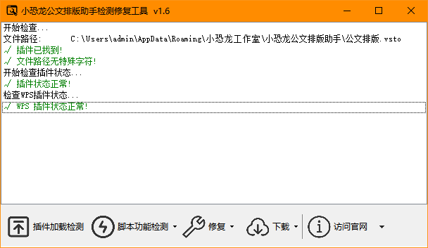
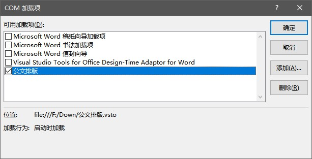
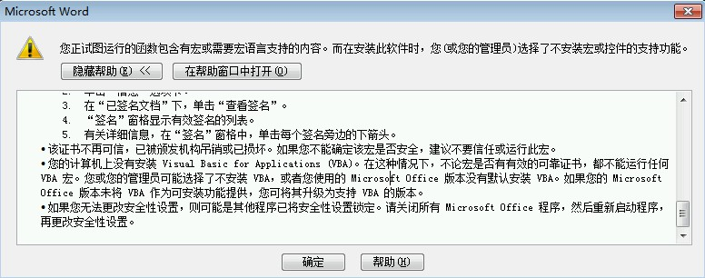
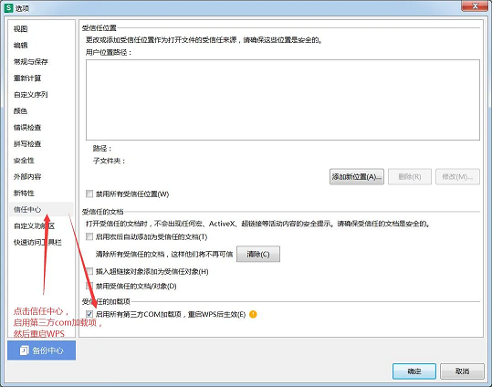
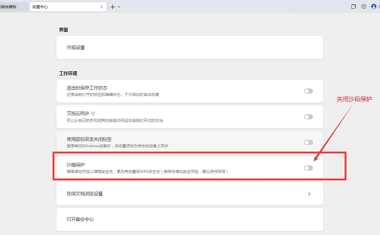
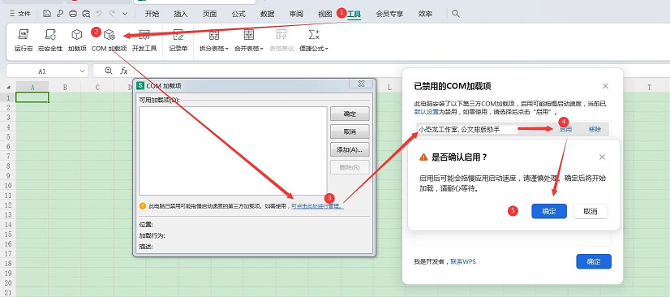
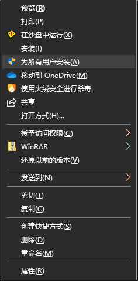

安装出错
安装报错1001 或 12019 或12029
可能原因： 无法访问微软下载中心、或对微软下载中心的访问网速比较慢导致的无法下载
解决方案： 单独下载安装附加组件。
已经安装了另一版本的自定义项不能从该位置升级
解决方案： 控制面板—添加删除软件—卸载公文排版助手， 然后安装。
插件已卸载, 但依旧提示安装具有相同标识的应用程序
解决方案: 按win+r打开运行, 输入rundll32 dfshim CleanOnlineAppCache 回车即可.
部署清单签名的证书或其位置不受信任
解决方案: 安装包里自带"首次安装请导入证书.bat"，以管理员权限运行即可。 若运行bat提示出错，可选择手工导入方法: 找到安装文件夹里的证书 xkonglong.com.cer , 双击打开. 点击"安装证书", 选择存储位置到"本地计算机". 第一次导入到"受信任的根证书发布机构". 导入完成后, 按照上述步骤再次导入到"受信任的发布者". 导入完成后. 打开WORD的 COM加载项, 勾选"公文排版助手"即可正常使用.
如果问题依旧，请参看微软官网的解决办法，需要修改注册表
插件加载
最新版用户优先推荐您使用"公文插件修复工具"，可以对常见问题进行自动修复。

指定的转换无效或路径无法加载插件
如果打开Word时提示安装 Office 自定义项出错: 指定的转换无效。
很可能是以下原因导致：
当您的用户账户文件夹名称包含中文字符、特殊符号（例如空格/表情符号❤）等特殊内容时，部分应用程序可能无法正常工作。
解决方法：
最新版插件已经支持更改安装路径，新建一个无特殊符号的文件夹，安装到该文件夹即可。
Office2007 安装后无法正常显示公文插件
解决方案:
注意: 2019年起,微软不再提供上文内附的Office2007 KB976477 更新补丁.
如果您之前未能升级该补丁, 请安装更高级版本的Office.
v1.0.8.3之后的版本不再支持 Word2007。
预装的 Office家庭和学生版 无法加载插件
目前已知一些品牌机预装的”Office201X家庭和学生版”有较大几率发生此问题。此类Office与安装版存在路径和权限差异，导致其无法很好兼容第三方插件。
解决方案1： 运行安装里包含的"家庭和学生版word修复.bat" 文件即可(需要管理员权限)
解决方案2： 请卸载此类Store版本Office，然后下载安装 Office.
卸载预装Office，请参见微软官网:从 PC 卸载 Office
下载和安装正版Office，请参见微软官网：重装Office
关联微软账号的 Office 安装后会自动激活，不用担心正版变D版。
精简版 Office,安装后无法显示公文插件
解决方案： 安装完整版
Word不是精简版,安装后无法显示公文插件
解决方案： 请先确保附加组件已正确安装。
方法一: 运行开始菜单里"启用插件.bat"或“公文插件修复工具” , 根据提示选择开启插件.
方法二: 查看 Word-选项-自定义功能区-“公文”菜单是否勾选.

查看 Word COM 加载项是否禁用公文排版插件.
查看 Word 设置–信任中心设置,是否勾选了”禁用所有应用程序加载项”
其他无法显示插件的情况综述
- Word的信任中心正在阻止加载项的运行
- 解决方案：恢复信任中心默认设置，允许加载项加载。或者使用安装包里的"导入证书".
- 防病毒软件阻止安装Word加载项
- 解决方案：安装时根据提示允许操作或暂时关闭安全软件。
- 您正在使用Office 2010 Starter / Wps 个人版
- 解决方案：office2010 starter 更改到专业版 , WPS 用户安装最新版插件。
- 您的计算机上安装了两个版本的 Word
- 解决方案：卸载一个不再使用的版本。
- Office的旧版本未完全卸载
- 解决方案：点此访问微软官网，下载专用卸载工具。
- Word安装已损坏(控制面板添加删除程序无法修复)
- 解决方案：卸载并重装Office。
您正视图运行的函数包含有宏或需要宏语言支持的内容……

解决方法: 小恐龙公文排版助手并未使用任何宏，事实上，连续点击确定后，公文排版助手仍然可以正常使用。 出现此问题，多数是精简版Office没有内置VBA模块导致的出错提示，单独安装VBA或者修复Office即可。 点此下载VBA单独安装模块。
WPS 用户不显示插件
- WPS 个人版需要安装最新版插件才能支持, 旧版插件只支持 WPS 专业增强版.
- WPS 安装最新版后加载项未显示
- 解决方案:
- 第一步：点击WPS选项,打开选项界面
- 第二步：点击信任中心，在最下方启用第三方com加载项前打勾

- 第三步：找到 WPS Office 的全局设置，关闭“沙箱保护”

- 第四步：重启WPS，查看插件是否被禁用，或com加载项前有没有打勾

使用出错
自定义公文字体时提示"这不是 TrueType 字体"
解决方案: 删除出错字体,右键菜单以"为所有用户安装"的方式重新安装字体.

以前能正常使用插件,最近突然不见了
解决方案:
方法一: 运行开始菜单里"启用插件",根据提示选择启用插件.
方法二: 打开 Word选项, 点击左侧的"加载项", 右侧窗口下方的下拉列表选择"禁用项目",点击"转到"按钮. 可查看插件是否已被禁用. 若已禁用勾选后重新启用即可.
插入版记线/页码等公文部件时报错
解决方案： 旧版Doc兼容问题，新建一个空白文档，把原文件内容复制过去，然后插入版记线即可。 解决方案： 默认模板被错误的修改过，删除默认空白模板即可。
新建公文样式时报错
解决方案： 系统未安装默认字体，关于-高级设置-指定公文字体。
意见反馈
公开渠道: 通过网页反馈
私密渠道: 
更多帮助
QQ频道:点击加入QQ频道 小恐龙公文排版助手
QQ群(1)661211620 QQ群(2) 956898287
入群口令: xkonglong